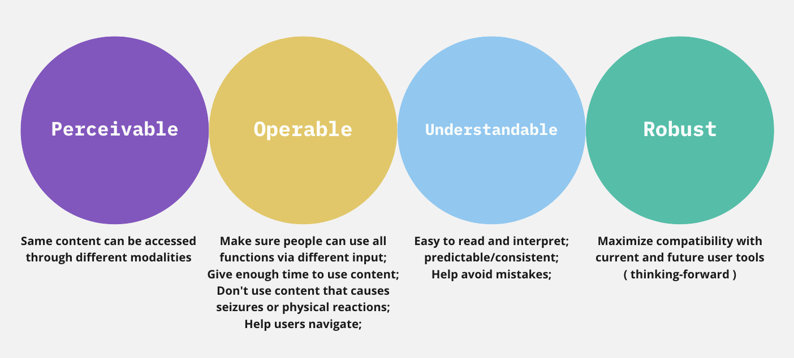
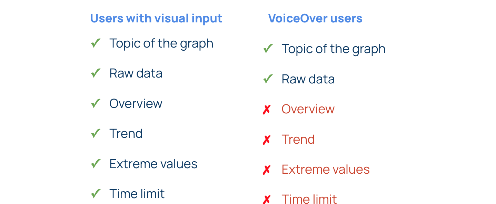
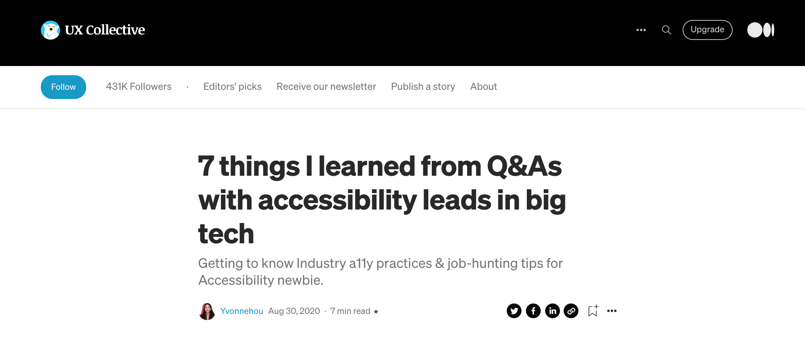
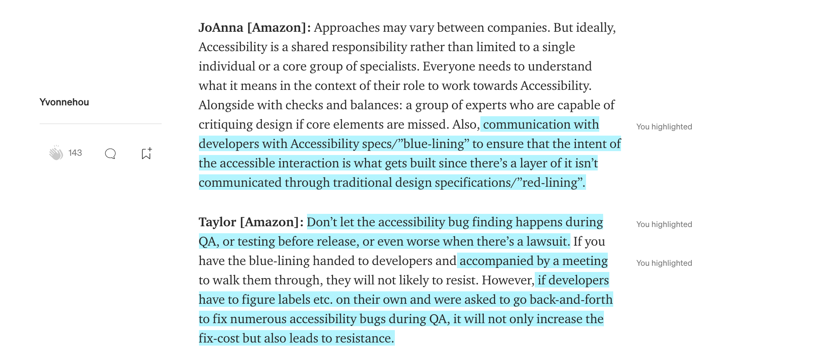
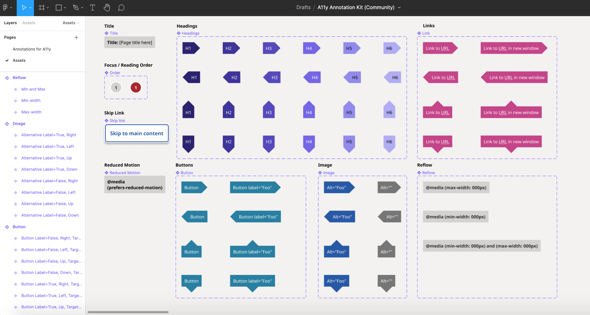
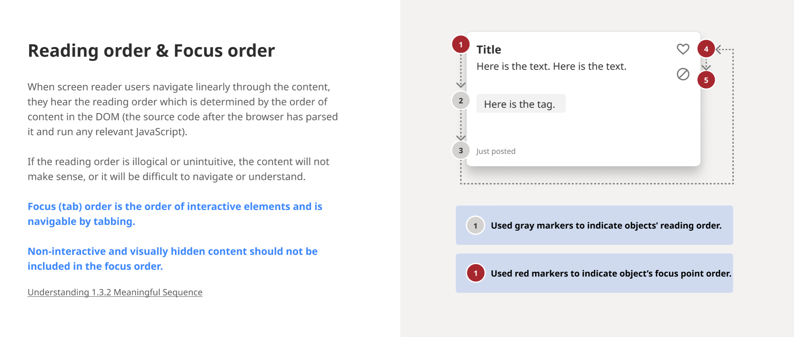
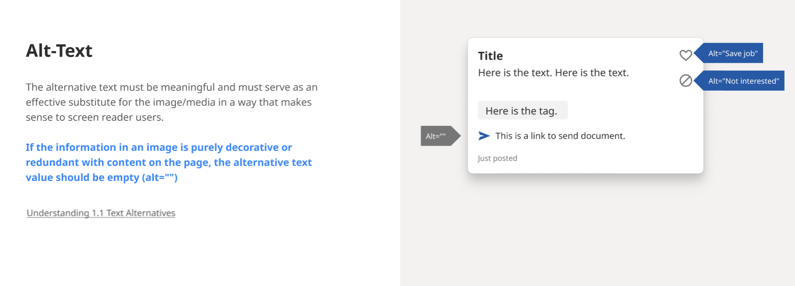
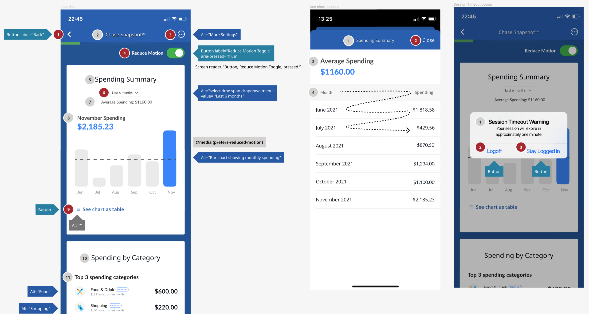

Reimagine the accessibility of
everyday data visualizations in fintech app.
2 min read
Project In a Glance
Problem
As a major touchpoint for customers to manage personal finances, digital banking has created huge discrepancy for visual and screen reader users.
Being data visualization-reliant, it creates disabling situations where users are deprived of equitable access to information and the sense of financial independence, as well as constrained by the sensitive nature of the personal banking info to seek help.
Solution
We scope down to redesign Chase app “Snapshot” feature that provides quick overview of monthly spending etc. through visualized data.
(1). We tested the current build using VoiceOver and boiled down the inspections into a accessibility critique report according to severity.
(2). Not only did we annotate our WCAG compliant design prototype with accessibility blue lines, but also introduced sonification to leverage alternative modalities to aid quick understanding of data visualization pattern and extreme values that worth attention from users.
Process
Collaborated with 2 other designers, 6 weeks.
Accessibility Critique
I performed VoiceOver on Chase app’s current “Snapshot” feature, and
identified problems that violate WC3 Accessibility Principles (POUR).
Below, I categorized them by descending severity.

Violates Perceivable:
6/7 of the Data Visualizations are skipped by VoiceOver
Screen reader users are denied of the same access to information. Such exlusion not only disrupts customer journey, but also conveys the message that disabled customers are off the company's radar.
Violates Understandable:
"See Chart as Table" alternative compromised usability
Although the same amount of information is available through an alternative table of raw data aside the data visualization, screen reader users still struggle to quickly grasp takeaways as users leveraging full visual bandwidth did. Specifically, banking data are often in large amounts and abstract to the listeners. When the screen reader quickly reads off the table row by row linearly, it makes things cognitively challenging to process, compare, and make correlations between rows.
Violates Operable:
Inaccessible motion
Chase integrates fancy motion when graphs appear, which impede the experience for screen reader users, as well as users with epilepsy and temporary or permanent vestibular disorder.
Also, there is no way for users to opt out motion easily. According to WCAG guidelines pertaining to animation, “Motion animation triggered by interaction can be disabled, unless the animation is essential to the functionality or the information being conveyed.”
Violates Understandable:
Poorly curated alt text leads to confusion and ineffficient navigation
When the focus point moves to the top 3 transaction history, VoiceOver reads out the SKU/serial number literally, which not only prolongs the time users navigate inefficiently, but also cause confusion in the context of number-driven dashboards.
For instance, it took an entire minute for VoiceOver to finish broadcasting the entire piece of information junk in the right figure. This also annoys visually abled users, since the abbreviations and arbitrary numbers also don’t make much sense to them.
Violates Operable:
Below-average time out and unadjustable time limit
Currently, Chase session timeout limit is 4 minutes, which is less than half of the 10 min of inactivity suggested by WCAG. Also, the pop-out window doesn’t have the flexibility for users to extend the time limit right on the spot. Since people with disabilities may take longer to read and interact with web content, there’s an increased risk that they will be unable to successfully use the content.
According to WCAG2.2.1 Timing Adjustable, users should be given the ability to adjust the time limit. We understand the legitimacy of a time limit presented due to security requirements.
See Full Accessibility Critique Report
How Might We
Narrow the discrepancy between visual and VoiceOver experiences?
Redesisgn Prototype
We used Figma to create an interactive prototype of all the visual components of our redesign. For the voice over aspect, we wrote scripts based on the current app and added improvements to make language accessible. We recorded the data sonification by using a piano. Finally, we edited everything into a cohesive and interactive video demo.
Session Timeout popped up after 10 min of inactivity with its focus automatically shifted to the alert.
It also gives user the option to extend the session and stay logged in right on the modal.
Reduce Motion option available
The redesign gives users the flexibility to toggle on/off to reduce motion right on the spot, making it more accessible for users with temporary or permanent vestibular disorder, users with epilepsy, and screen reader users.
Data Sonification aids graph comprehension
Our team addressed data visualization accessibility through the exploration of data sonification. Our design was able to optimize graph comprehension through using the pitch of the sound (higher data points associated with higher pitches, and lower data points with lower pitches) to represent the data spatially. This allows users to quickly grasp the overall trend of the data visualization in a “glance” and aid graph comprehension of any extreme data points.
Accessibility Design Bluelines
Inclusive effort is a joint responsibility,
and should happen early.
How to make accessibility NOT an afterthought?
It needs to be distributed throughout the process and responsibility of the product cycle.
As designer responsible for the early stage of a solution, I am mindful not to seek compliances by filling out checklists,
which makes it like shackles that holding us down. Instead, I wish to turn it around and think of building great and equal user experience.
It will naturally get to compliance and think about it as a way to improve and innovate.
I first heard of Accessibility Bluelines when I was having virtual coffee chat with designers
who are actively contributing to the inclusive design industry.
From the chats, I realized there are good practices that junior designs can also do
to start a design right, and make sure it passes on to the dev team smoothly to get implemented.


Read My Full Medium Article
So in this Chase Redesign, I practiced using Bluelines.
Document Accessibility in Design Handoff,
Better communication with developers.




Screen reader users & beyond
Disability is the only identity that everyone is going to experience in their time of life, considering situational and temporal disabilities due to all range of disabling conditions. While solving pain points screen reader users faced using the Chase app Snapshot feature, it improves inclusivity and usability of the redesign so it is optimal for all.
Envisioning design in context,
I optimized Chase experience for beautifully complicated users.
We embraced users who located differently on the ability spectrum, as well as ones who are distracted, anxious, and impatient under real-life circumstances.
For instance, the reduce motion option also helped motion sensitive users and who likes checking the app on the go ;
The sonification representation of the graph trend also helped able-bodied users reduce cognitive load by quickly building a mental model.
Takeaways.
Provide multiple means of representation through different modalities. There is not one means of representation that is optimal for all.
My personal experience using Chase app was pretty good, as a well-sighted user. When switching perspective into an audio representation of the app, I was surprised by the poor experience. From my secondary research, nearly half of the US household used Chase and most of my international friends have Chase as their first debit card. As a service that faces a national audience and beyond, only acing its visual representation marginalized users who prefer using other modalities.
Even just having one or two participants can help shed light on any experience gaps that may exist.
To be frank, it’s harder to recruit confident screen reader users to observe and validate our solution. We also received responses from well-sighted individuals who saw our user testing post but simply misunderstood “confident screen reader user.” But we definitely did not give up searching since we believe user voice should be placed front and center.
Yiwen Hou
User Experience Enthusiast.
Get in touch
Tel: +1 (858)736-7402
Drop me an email: yvonnehou98@gmail.com
I am located at: San Diego, CA

Our site uses cookies. By continuing to use our site, you agree to our Cookie Policy.